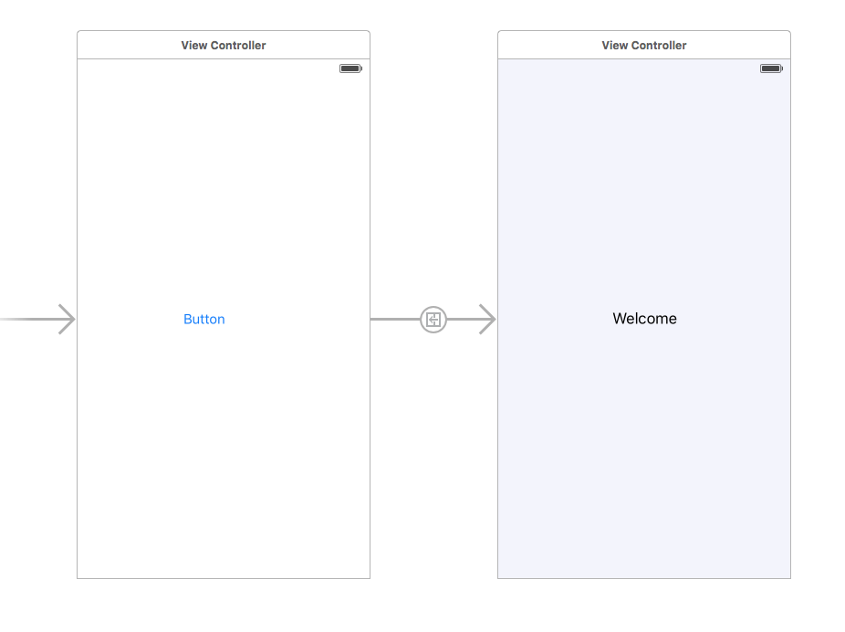
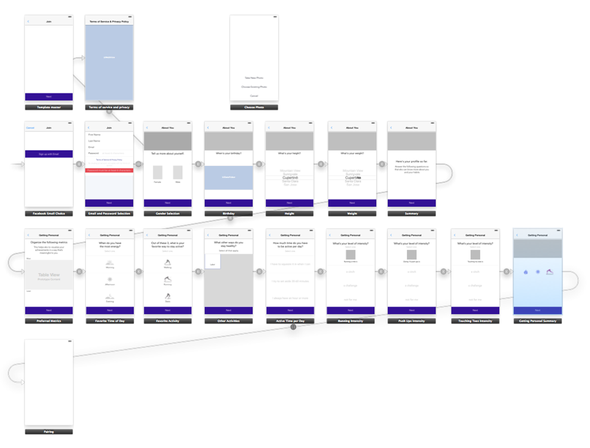

Hi from the codebug,
Today we will talk about UIStoryboardSegue but first a quick history lesson.Apple introduced UIStoryboardSegue in iOS 5. It was a great new glorious idea: that you can model navigation in your application visually.
Here is how it worked:
You have two screens.You press a button and it takes you to a new Welcome screen. All you need to do to achieve this behaviour was to draw an arrow. The arrow from one to another represents the segue. Neat, huh?

Eventually you could have an entire app in a storyboard. All in front of your eyes. What a great and marvellous idea!!

And here is where things were derailed.First we though that having all your UI in a single storyboard is a good idea. And then we understood that:
- It makes it impossible for two people to work on the UI because of infamous storyboard conflicts.
- The storyboards becomes hard to load and navigate.
- We break the single responsibility principle because the storyboard knows about the entire UI of the app, instead of having it partitioned per feature and allowing developers to work on different parts of the app at the same time.
- In teams of many developers only one person can touch the UI, others have to wait or synchronise carefully.
Apple acknowledged the issue and allowed us to break one storyboard into smaller ones. But still, imagine you have 10 iOS developers, all working on a few View Controller in a storyboard. Are you brave enough to try that? I wouldn't be. Because there is no separation. Everything is coupled to everything. There is no modularity. You cannot work independently. Instead what I end up doing is creating one storyboard per feature, or worse, per View Controller.
Now to the real problem with Segues. In a complex app you often want to present a screen, when it is needed. Like showing the Login screen when the user is not logged in. Under normal circumstances this should be no harder than:
let loginScreen = LoginViewController()
// Do additional setup on the loginScreen
self.showViewControlller(loginScreen, animated:true)
Makes sense, right? You create the screen and you show it. Simple, honest, clean.
But with segues things are much more cumbersome. Here it is:
1. First you have to modify the storyboard and draw a new UIStoryboardSegue. Make sure no one is working on that storyboard. Also it may very well be that the two screens are not even in the same storyboard.
2. Then you assign a magical identifier to that segue in the storyboard.
3. Implement perform segue, do some setup in prepareForSegue by checking the same magical string and do a little unwrapping because OF COURSE there are no compiler checks and no type safety:
override func prepareForSegue(segue: UIStoryboardSegue, sender: AnyObject!) {
if (segue.identifier == "ShowDeal") {
if let viewController: DealLandingViewController = segue.destinationViewController as? DealLandingViewController {
//setup code here
}
}
}
4.Call perform segue.
Let's compare the technical implementations.
The first one is simple, compiler checked, easy to understand, scalable for any team size, doesn't require additional setup to show new screens.
The segue approach is a massive pain in the ass, not safe, not checked by the compiler, magic strings, requiring segue drawing in a storyboard, potentially conflicting with other people's changes in that storyboard. Why would you even want to use it? Why did Apple even create it?
Apple is following the philosophy that creating UI's should be easy, that you should see the entire app in front of you. However the downsides to this are enormous in terms of modularity and good code, and they are not worth it.
I never use UIStoryboardSegues, but I do use storyboards. They have cool features, static UITableView cells being one of them, among many others. My code is much better and safer because I don't use Segues. I can show any View Controller at any time in 2 lines of code, and I get Swift's awesome compiler to assist me. Everything you can do with segues, can be done without them. Easier and better.
But codebug,why do people still use UIStoryboardSegues?
Some people think everything Apple makes is great and should be used. This is not the case. Consider Airdrop. UIStoryboards segues are not good. They are proven to be bad.
Who are Segues really for? The answer is Designers, Prototypers. They provide a great visual feedback of how your app may look like but are very cumbersome and unflexible for developers. If you are a developer, you know you shouldn't be using them.
PS: Id love to hear your experiences with segues.